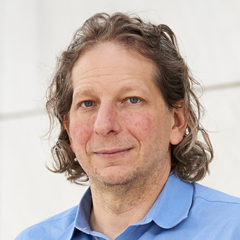

Speakers.
| perception | decision making | language | |||
|---|---|---|---|---|---|
|  |
Josh Tenenbaum |
Peter Dayan |

|
Michael Franke |
|

|
Tim Kietzmann |

|
Marcel Binz |

|
Ethan Perez |
|
Frank Jäkel |
Lydia Hellrung |

|
Lars Meyer |
We will announce more speakers soon.